图 4：各类轨道常见的选项
（注：从 www.matroska.org 简单复制而来。）
Matroska 力求成为多媒体容器格式的唯一标准。 它起源于一个称作 MCF 项目，但已有显著差别，因为它基于 EBML（可扩展二进制元语言）， XML 的二进制衍生语言。EBML 使得 Matroska 开发团队在未来格式可扩展性方面 显示出相当的优越性，而不破坏旧解析器对文件的支持。
要了解更多信息，请移步 Matroska 主页。
mkvmerge 与 mkvmerge GUI（即 mmg）是由 Moritz Bunkus 编写的两个程序。 它们是 mkvtoolnix 工具包的一部分。mkvmerge 可以读取很多种多媒体文件，并将它们包含的内容存放在 Matroska 文件中。 不幸的是，这是个命令行程序，而并非所有人都能适应命令行操作。这便是 mkvmerge GUI 的用武之地。该 GUI 为用户提供既直观又强大的 mkvmerge 界面。
两个程序都有适用于 Windows 与 GNU/Linux 及其他 Unix 派生环境的版本。 程序依 GPL 授权，所以任何感兴趣的人都可以获取源码。
mkvtoolnix 的最新版本的总可以在 Moritz Bunkus 的网站 找到。Windows 用户需要同时下载运行期 DLL 与 mkvtoolnix 二进制程序。 Linux/Unix 用户或许会选择下载源码并自行编译 mkvtoolnix。
本指南仅集中讲解这些工具的 GUI 部分。所有命令行选项在 mkvmerge 的手册/HTML 文档页 中都有详尽解释。
（注：本段不涉及编译与安装。要了解相关信息，请参阅包含于
mkvtoolnix 工具包的 mkvmerge 的自述文档以及
README 文件。）
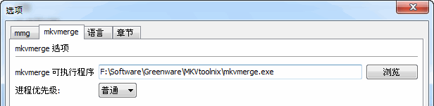
图 1：使用此按钮选择 mkvmerge 程序的路径。
mmg 只需要知道 mkvmerge 程序的位置。通常情况下它会被自动找到。 但如果没能找到，您可以在 选项 窗口选择要使用的程序。
mkvmerge 对 文件 与 轨道 严格区分。 一个输入 文件 通常包含一条或多条 轨道。 mkvmerge 的运行至少需要一个输入文件与要创建的 Matroska 文件的文件名。 用户可以从这组基本选项开始，添加更多输入文件，为每条轨道选择高级选项， 应用更多全局选项等。
典型的基本步骤如下：
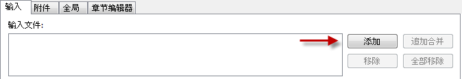
图 2：使用这些按钮来添加与移除文件。
当 mmg 启动时，它显示第一个（或许也是最重要的）选项卡： 输入选项卡。在这里您可以看到三块不同的区域。最上面的输入框列出所有的 输入 文件。
图 2 显示了上方列表框右边的四个按钮，您可以使用 添加 与 追加 按钮来添加文件到列表框，也可以通过 移除 与 移除所有 按钮来移除选中项或所有输入文件。
添加一个文件 与 追加一个文件 之间是有不同的。 通常来说，添加了的 文件中的所有轨道将被平行置于输出文件中。例如 当您有一条视频轨，一条或多条音频轨，以及一条或多条字幕轨时，符合这种情况。 它们都包含时间码相同的资料，应当同时被播放出来。
而 追加一个文件 将使第二个文件的所有轨道被追加到上一个 添加的 文件的对应轨道。这样这些轨道的内容将被一个接一个地播放。 您只能连接类型相同（如将视频轨连接到视频轨）、编码相同（如将 MP3 连接到 MP3 而不是将 MP3 连接到 AC3）且参数相同（如采样率必须相匹配）。
您可以通过文件名分辨 添加的 和 追加的 文件。
追加的 文件和轨道以“++>”开头。
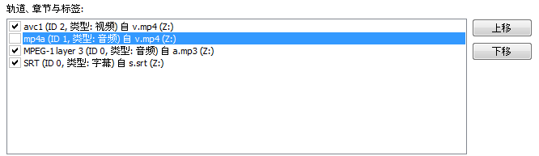
图 3：一条启用的轨道与一条禁用的轨道。
第二条轨道不会被复制到输出文件中。
只要用户在上方列表框中添加至少一个输入 文件，第二个列表框将列出所有可用 轨道。每条轨道默认是启用的，将被混流至输出文件中。 然而，您可以简单点击第二个列表框中各轨道正前方的复选框来改变它。如图 3 所示。
对这里的每条轨道，用户都可以通过轨道列表下方的输入框与复选框来选择 轨道的细节选项。下面的章节将介绍这些选项。
轨道列表框的右边有两个按钮，您可以通过它们控制输出文件中轨道的次序。
点击 上移 与 下移 按钮，当前选中的轨道将按相应方向移动。
移动 追加的 轨道（以“++>”开头的）时
有些限制，例如 追加的 轨道不能作为第一条轨道。
关于章节的更多信息可以在本文档关于 章节编辑器 的章节 以及 mkvmerge 的自述文档中找到。
根据当前选择的轨道类型（视频，音频，字幕等）甚至是轨道内容， 所有轨道选项中仅有部分可用。这些选项跨越三个子选项卡：轨道常规选项 、格式细节选项 与 额外选项。
图 4：各类轨道常见的选项
注：除非被用户改动，mkvmerge 将从输入文件复制轨道配置 （如果源文件格式支持此类信息）或自主选择默认值。
可用的常规选项有：
轨道名称：用户可为当前轨道设定名称。
该名称是无格式限制的字串。实例如“导演评论”或“西雅图大观”。
注意这些名称不必包括影片名称。语言：用户可为所有类型的轨道选择语言。
语言以 ISO639-2 语言码编码。下拉框包括所有
ISO639-2 代码所以用户不必担心选错语言码。索引：Matroska 的 cue 索引相当于 AVI 的
index 索引。它们是关键帧的纽带。通常该选项应维持“默认”一值。
mkvmerge 会自动为任何给定轨道类型选择最佳规则。
关于轨道的完整解释可在
mkvmerge 文档 中找到。“默认轨”标签： Matroska 接受可告知播放器
优先播放指定轨道（用户未选择其他轨时）的标签。
当然，每种轨道类型有它自己的默认轨，例如
默认音频轨是英语的，同时默认字幕轨是法语的。如果没有轨道被设为
默认轨，mkvmerge 将提升它发现的每类的第一条轨道为默认轨。
这与各类媒体播放器的行为一致。标签：您可以为每条轨道创建 XML 标签文件。
关于所有标签的完整解释请参看示例文件和 mkvmerge 自述文档。
如果您使用这个选项，99% 是想关联标签到特定轨道。
全局选项卡的标签选项可能不是您需要的。时间码：通常 mkvmerge 会从源文件导出
各帧的时间码，但它也能读取并使用此处指定的外部文本文件中的时间码。
本功能非常复杂。几乎所有用户应将此项留空。
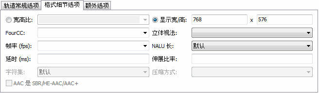
图 5：视频轨的典型选项
格式细节选项包括：
宽高比：用户可通过本选项设定播放时应使用的宽高比。
它默认为视频编码时的宽高比，但可以更改，比如针对变形编码。
GUI 要求格式为浮点数（如“2.33”）或分数（如“16/9”）。
FourCC：Matroska 通常不储存
其他容器用来识别编解码器的四位代码（Four-CC）。
Matroska 有自己的格式，叫作 CodecID，
但它也有个 AVI 兼容模式。在此模式下，将同时储存 FourCC 值。
使用本选项可以强制 FourCC 为指定值。
但您无法更改 mkvmerge 所用的 CodecID。
立体视法： 现有一种技术，通过同时播放两条视频轨，
它们摄制于很相近但又有细微偏差的方位，以展示虚拟三维图像。
每只眼睛只能看到其中一轨（的画面）。这就叫作 立体视法。
大多数用户应将此项留空。
帧率：AVC/h.264 视频轨的 每秒帧数。当您添加
AVC/h.264 基本流时，必须告知 mkvmerge 该视频录制时每秒有多少帧，
因为在基本流中并没有这条信息。
如果您未进行任何选择，mkvmerge 将默认为 25。
您既可以输入浮点数（如 29.97），也可以输入分数（如 30000/1001）。
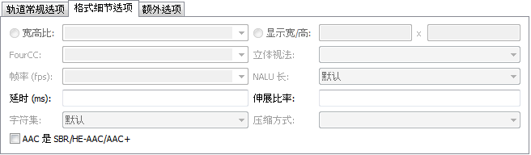
图 6：音频轨的典型选项
延时（ms）：有时音频与视频没有正常同步。
通过本选项，用户可以对任何轨道的时间码进行偏移调整。指定值正负皆可。
此处输入的数以毫秒为单位，并将在 伸展比率（参见下文）
得到应用之后 加到各时间码上。
伸展比率：有时音视频同步是随着播放进度逐渐错开的。
这可以通过提供 mkvmerge 伸展时间码的比率来解决。
如果未输入任何数值，不改变时间码的“1.0”将被采用。
延时（参见上文）之前得到应用。
字符集： 某些文本字幕与章节并不存放它们创建时所用字符集的信息。
本选项非常重要，因为文本字幕与章节在混流过程中会被自动转换为 UTF-8 字符集。
mkvmerge 通常假定系统当前的字符集为字幕或章节文件保存所用的字符集。
但如果不是这样，用户可以自己选择正确的字符集。
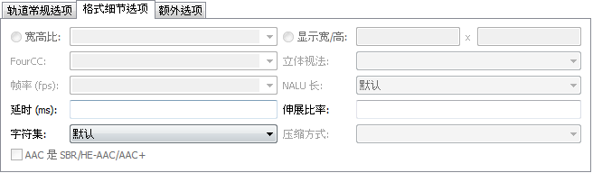
图 7：字幕轨的典型选项
压缩方式：Matroska 有一套对轨道进行无损压缩的强大系统。
这些压缩方式（算法）可以应用到任何给定轨道，但有些播放器只支持 VobSub
轨道对本功能的使用。这也是该功能最有用的地方。
至于其他轨道，尤其是音视频轨，已经被压缩过，所以额外的压缩并不会起多大效果。
对于 VobSub 字幕，如果您启用 zlib 压缩，将可以另外获得约 30% 的压缩率。
这就是它是 VobSub 轨道的默认处理方式的原因。
AAC 是 SBR/HE-AAC/AAC+：被称作“高效 AAC”(HE-AAC)
的新技术在以.AAC 为扩展名存储时有些缺点：无法侦测这些文件中的
HE-AAC 部分。因此当文件使用该技术时，用户得手动勾选本项。请注意，存储于
.MP4 文件中的 HE-AAC 不存在此问题。Matroska 文件可以包含其它文件，叫作附件。 它基本上就像您最爱的电子邮件程序一样工作。 这一概念的提出，是为了提供关于文件的额外信息。例如 CD rip 的封面照片，文本格式的影片背景信息补充， 甚至是显示字幕需要的字体包。
每个附件需要两个基本信息：文件名（很显然需要）与应当与文件关联的 MIME 类型。使用方法很简单，与在 输入 选项卡中添加文件类似。

图 8：使用这些按钮添加与移除附件
在 GUI 的第二个选项卡，附件 选项卡中，您可以使用 添加 按钮添加文件，使用 移除 按钮移除所选附件。 一旦选中一个附件，此选项卡的其他控件都将可用。 您必须为每个附件选择 MIME 类型，但描述是可选的——尽管总提供描述是个好想法。 这将使别人更容易识别出您向这个 Matroska 文件附加了什么。
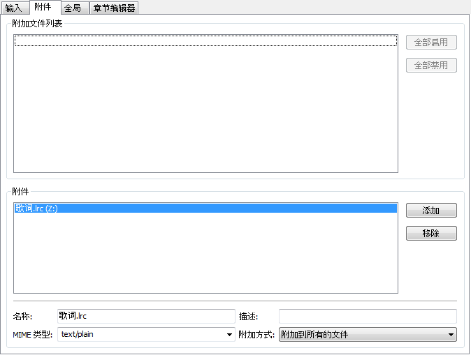
图 9：附件的典型选项
最后一个选项，附加方式，只有在您同时切割输出文件时有影响。
（全局切割选项将在后续段落中解释）如果选择了 附加到所有文件，
则当前文件将被附加到创建的所有输出文件。如果选择了
仅附加到首个文件，当前文件仅附加到创建的第一个文件。
第三个选项卡，全局，包含了应用到整个文件，而不只是一或多个轨道的选项。
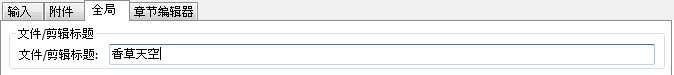
图 10：为当前影片选择标题
文件/剪辑标题: 此标题用作真实的影片标题，如《香草天空》。
切割 段落处理如何切割输出文件为多个小文件。
如果没有选择切割，将只创建一个大文件。如果“切割”处于选中状态，您可以告知
mkvmerge 在写入指定数据量或到达指定时间码时开始创建新的输出文件。
可接受的格式有：
HH:MM:SS.nnn
或后接字母“s”的秒数。多个时间码可以用逗号隔开。
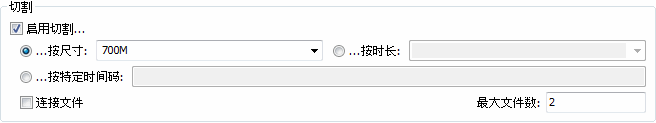
图 11：切割的典型选项。创建两个约 700 兆大小的文件。
连接文件： 此选项控制 mkvmerge 如何处理切割。
关于此功能的一点解释：
Matroska 支持简单告知特定文件是前趋或后继文件的文件链接功能。 严谨地讲，被连接的并不是文件，而是 Matroska 剪辑。 因为大多数文件可能只包含一个 Matroska 剪辑，所以我简单地讲“文件链接”， 尽管“剪辑链接”更恰当。
每个剪辑以唯一的 128 位宽的剪辑 UID 标记。此 UID 由 mkvmerge 自动生成。 链接操作主要通过写入前/后文件的剪辑 UID 到当前剪辑的头部信息完成。 mkvinfo 发现这些 UID 时会将它们输出。
如果一个文件被切割为多个小文件，并且使用了链接功能，后续文件的时间码将不会从 0 开始，
而是从前一文件停止的地方继续。这样，绝对的时间将得以保留，即使前一文件不可用
（如用作流媒体时）。如果未使用链接，每个文件的时间码都将从 0 开始。默认情况下
mkvmerge 不会使用文件链接，因为某些播放器仍然无法处理连接起来的文件。
如果您希望连接文件，您可以通过勾选 连接文件 复选框来启用该功能。
不论是否启用了切割，用户都可以告知
mkvmerge 将生成的文件连接到指定的 UID。This is done by
您可以通过在 上一剪辑 UID 和 下一剪辑 UID
两个输入框中输入有效的剪辑 UID 来完成这项操作。这些选项接受
mkvinfo 输出的剪辑 UID 格式：以“0x”为前缀、以空格分隔的 16 个
介于 0x00 与 0xff 十六进制数。如 0x41 0xda 0x73 0x66 0xd9
0xcf 0xb2 0x1e 0xae 0x78 0xeb 0xb4 0x5e 0xca 0xb3 0x93。
另有一种较短的格式可供选择：没有“0x”前缀或空格的 16 个介于
0x00 与 0xff 的十六进制，如
41da7366d9cfb21eae78ebb45ecab393。
如果启用了切割功能，第一个输出文件将与
上一剪辑 UID 输入框中指定的 UID 相连，最后一个输出文件将与
下一剪辑 UID 输入框中指定的 UID 相连。
如果未启用切割，唯一的输出文件将同时与指定的两个 UID 相连接。
您可以通过浏览按钮选择要添加到输出文件中的章节。 关于章节各方面的完整解释可以在 章节编辑器段落 找到。
不像您在输入选项卡为每条轨道选择的标签，此处所选的标签必须包含轨道 UID。 这些标签不会被自动指派给任何轨道相连。 在 99% 的情况下，这不是您希望使用的选项！
完整的解释可以在 mkvmerge 自述文档 中找到。
当您一切都设置完毕时就可以启动混流进程了。
您要做的最后一件事就是选择要混流到哪里。您可以通过
浏览 按钮选择输出文件。
完成之后，点击 开始混流 按钮或者在
混流 菜单中选择同样的菜单项。
如果一切都已正确设定，mmg 将显示混流窗口。 进度在顶部显示，作为 mkvmerge 当前状态的大体描述。
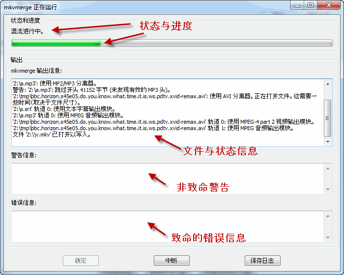
图 12：混流窗口
mkvmerge 有三种不同“严肃级别”的信息： 状态报告，警告信息与错误信息。所有状态报告信息都在上方窗格显示。 包括发现的轨道类型及其它令人感兴趣的信息。
警告信息在中间的窗格显示。mkvmerge 发出警告时不会中断处理， 但可能停止对遭警告的轨道进行混流。 您应该关注所有警告信息。
错误信息在下方的窗格显示。错误通常是致命的， mkvmerge 输出错误信息后即停止混流。 此类信息可能是硬盘已满或者 源文件已损坏且无法继续处理。
中断 按钮向 mkvmerge 发出停止混流的信号。
除非 mkvmerge 遭遇死循环，它会在您按下按钮不久之后停下。
您可以通过 保存日志 按钮保存
mkvmerge 的完整输出信息为文本文件供进一步研究，
或者如果您发现了设计缺陷，且希望给我辅助信息。
您配置选项的所有努力都不必随着退出程序而消失。
您可以通过 文件 菜单中的 保存配置
选项保存所有混流配置为基于文本的配置文件，以后可以通过
载入配置 选项恢复配置。
默认扩展名为通常不被其它程序使用的 .mmg。
您也可以将此扩展名与 mmg 关联，
这样当它被附加这样的配置文件名调用时，可以自动加载配置。
当您要混流多个文件时，您不必先准备第一个文件，等它混流完毕，再准备第二个文件， 等它完成，如此如此。mkvmerge GUI 包含一个任务管理器， 可以将完整的任务排队，并在您方便时挨个运行。使用任务管理器的基本步骤如下：
添加到任务队列 按钮，并为它设定一个易于辨认的标题。混流 菜单中选择 管理任务，
调出任务管理器。启动 按钮。
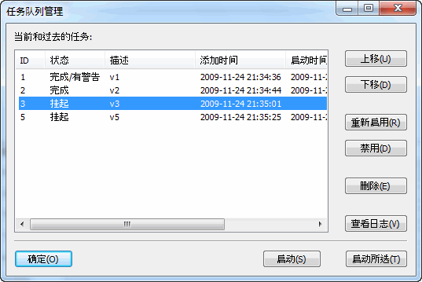
图 13：任务管理窗口
每项任务有六个属性：一个由
mkvmerge GUI 自动选定的 ID；它的状态（挂起：尚未混流；
完成：已成功混流；
完成，有警告：成功完成混流，但是有警告；
失败：混流失败）；您输入的名称；
任务添加到任务队列的日期与时间；
混流进程启动的日期与时间；
混流进程完成的日期与时间。
全局控件位于窗口底部。启动
按钮将启动所有状态为 挂起 的任务。
启动所选 按钮将启动当前选中的所有混流任务，
不论其状态如何。
右边的按钮对选中的所有任务进行操作。
上移 与 下移 将所选任务在列表中移向上方或下方。
重新启用 按钮设定所选任务的状态为
挂起，这样，下次按下
启动 按钮时它们将被启动。禁用
按钮将设定状态为 完成。
混流过程中 mkvmerge 的输出信息不会被显示，而是被储存下来。
如果您想查看任务的输出信息，您可以点击 查看日志
按钮。这当任务完成但有警告时，或者当任务完全失败时非常有用。
全功能的章节编辑器是 mmg 的新功能之一。 它可以读取基于文本的章节文件，从已有的 Matroska 文件导入章节，输出可以在全局选项卡中选定的基于文本的章节文件， 以及将章节直接写入现有 Matroska 文件。
不像其他很多系统，Matroska 支持 嵌套的 章节。这主要意味着您可以为章节定义子章节。
Matroska 中的章节实体至少由四个项目组成：它所应用到的轨道的 UID， 章节标题/名称，它的起始时间以及与它关联的语言代码。 另外的元素是可选的，包括终止时间以及其他语言代码和国家代码。 用户通常只需要必备元素。在这些元素中，需要指定的只有名称，起始时间和语言码。 mkvmerge 会自动将所有章节指派给整个文件。
第一个例子比较简单。被讨论的影片包含四部分： 开头的序幕，第一幕，第二幕，以及演职员表。 注意，终止时间戳是可选的。
序幕（起始于 00:00:00，语言 英语）
第一幕（起始于 00:01:00，语言 英语）
第二幕（起始于 00:05:30，语言 英语）
演职员表（起始于 00:12:20 终止于 00;12:55，语言 英语）
再举个更复杂的例子，它包括子章节。以路德维希·范·贝多芬（Ludwig van Beethoven） 的戏剧《Fidelio》为例。为简便起见，我只算了前两幕的前三段。
第一幕包括：
第二幕包括：
第一幕，也就是我们的第一章，总时长为 11:20。第二幕时长 17:06。这些章节的结构如下所示：
Erster Akt（起始于 00:00:00 终止于 00:11:20，语言 德语，国家 德国）
Ouvertüre（起始于 00:00:00 终止于 00:06:24，语言 德语，国家 德国）
Arie: 'Jetzt, Schätzchen, jetzt sind wir allein'
（起始于 00:06:24 终止于 00:11:10，语言 德语，国家 德国）
Dialog: 'Armer Jaquino'（起始于 00:11:10 终止于 00:11:20，
语言 德语，国家 德国）
Zweiter Akt（起始于 00:11:20 终止于 00:28:26，语言 德语，国家 德国）
Ouvertüre und Arie: 'Gott! welch Dunkel hier!'（起始于
00:11:20 终止于 00:22:06，语言 德语，国家 德国）
Melodrama und Duett: 'Wie kalt ist es'（起始于 00:22:06
终止于 00:27:27，语言 德语，国家 德国）
Dialog: 'Er erwacht!'（起始于 00:27:27 终止于 00:28:26，
语言 德语，国家 德国）
mkvmerge 与 mmg 的章节编辑器都支持不同格式的章节文件。
OGM 文件中的格式是最基本的格式之一。它是一种基于文本的格式。 每个章节项目包含两行，第一行包含开始时间，第二行则是章节标题/名称。 每行都有编号。
上边第一个例子可以用这种格式表示：
CHAPTER01=00:00:00.000
CHAPTER01NAME=序幕
CHAPTER02=00:01:00.000
CHAPTER02NAME=第一幕
CHAPTER03=00:05:30.000
CHAPTER03NAME=第二幕
CHAPTER04=00:12:20.000
CHAPTER04NAME=演职员表
第二个例子不能用这种格式表示，因为这种格式既不支持语言指定， 也不支持终止时间或者嵌套章节。 它也有优越之处，就是这种文件很容易创建，而且 不论是 Windows 平台还是 Unix/Linux 平台上都有一些工具可以 直接从 DVD 创建此类文件。
由于一些限制因素，mmg 不能以此格式输出章节。
我创建了一种基于 XML 的章节格式，它与 Matroska 所用的系统非常一致。 使用此格式，您可以尽情控制所有功能。 在这里我就不详细描述这种格式了。请参看 mkvtoolnix 附带的示例 XML 章节文件。
章节编辑器可以直接从 Matroska 文件读取章节。这些章节可以 输出为 XML 章节文件，也可以导回原来的 Matroska 文件 或者写入另一个 Matroska 文件。支持所有功能。
章节编辑器包括三部分：所有章节的树形结构， 用来添加、移除与调整章节的五个按钮， 以及用来设置各章节数据的输入框。
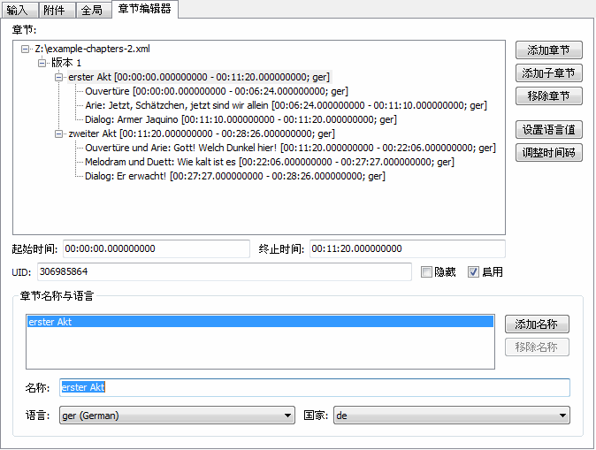
图 14：章节编辑器，显示的是前文所述的例子
Matroska 文件中的章节被定义有起始时间，名称和与名称相关联的语言。 每个章节可以有多个名称，每个名称与不同的语言相关联。 您也可以添加终止时间，但这不是必需的。
通过 章节编辑器 菜单中的 新建
菜单项可以创建新章节文件。您可以通过 添加章节
或 添加子章节 按钮添加章节。这两个按钮的不同之处在于
当一个章节已被选中时， 添加章节 按钮将在所选章节后
直接追加一个同级章节，而 添加子章节
按钮将在当前选中章节下级末端添加一个章节，作为其最后一个子章节。
移除章节 按钮需小心使用。它会移除整个子树而不要求确认，
而且目前也没有“撤销”菜单项可用。
选中一个章节条目后您可以更改它的数据。 起始时间与终止时间的格式均为
HH:MM:SS.mmm 或更简易的
HH:MM:SS。将会预先添加一个章节名称。
您可以编辑它并选择这个名字所用的语言。这样您可以提供多语种的名称，如
“The hero arrives”以“eng”为语言，
“Der Held kommt an”以“ger”为语言。
您只需点击 添加名称 按钮来满足更多需求或者点击
移除名称 去掉一个。
创建很多章节，又总得不停地修改语言，可是件不小的工作。
因此您可以在选项窗口的 章节 选项卡中选择
mmg 默认应该添加的语言与国家标签。
设置语言值 按钮的效果与此类似。
您可以通过该按钮将所选的语言与/或国家应用到所选章节项目及其所有子项。
要保存章节为 XML 文件，您可以选择 保存 或
另存为。另存为 不能用来写入章节至现有
Matroska 文件——您应该通过 保存到 Matroska
文件 来实现。
您可以通过 章节编辑器 菜单中的 载入
菜单项载入已有章节文件或者 Matroska 文件中的章节。
mmg 将自动侦测使用的文件类型并读取章节。
mmg 包含有针对已有 Matroska 文件头部字段的编辑器。 您可以通过选择 mmg “文件”菜单中的“头部编辑器”来启动它。
头部编辑器允许用户在不对整个文件重新混流的前提下编辑剪辑信息头和各轨道头中的一些字段。 用法很简单：载入文件，选择您希望更改的头部字段， 更改选中字段的取值，最后保存文件。
Matroska 文件格式对大多数头部字段的存在与否留有余地。 mmg 的头部编辑器显示它支持的所有头部字段，即使文件中不存在这些字段。 它允许用户在文件中添加目前不存在的字段，也允许用户从文件中移除已存在的字段。
用户可以在“文件”菜单中选择“打开”来开始编辑文件。 选择恰当文件后，头部编辑器将会扫描文件中的所有重要元素。 根据文件大小，这要耗费相应的时间。 由于 Matroska 灵活的文件结构，这是必要的一步。
打开文件之后，左窗格将为文件中发现的各剪辑头与各轨道各显示一个元素。 树形结构中的每个节点都包含一系列的子元素，它们代表真实的头部值。 用户选择这样的子元素后，右窗格将被更新，以显示该元素的一系列情况：
大部分值的数据类型显而易见：数字，字符串等。然而，二进制类型以十六进制数位的序列显示。 可接受的格式与 mkvmerge 指定剪辑 UID 的那些选项相同：既可以是简单的十六进制数位序列 （如 1857a7fe7d……）也可以是每两位以“0x”为前缀的十六进制数 （如 0x18 0x57 0xa7 0xfe 0x7d……）。
您可以通过选择“头部”菜单中的“检验”对您的改动进行检验。 在用户保存文件时，检验也会自动进行。 检验操作可以确保用户提供的数值能够存储到相关元素中。 例如数字元素不能包含字符。
如果检验失败， 首个未通过检验的元素将被选中，这样用户可以修正错误。
用户可以通过选择“文件”菜单中的“保存”来保存改动。 如果未进行任何改动，mmg 会如实告知，且不会对文件进行改动。
在改动文件之前，mmg 会检查文件打开后是否已被其它应用程序改动。 如果是这样，mmg 会警告用户，放弃所有改动并重新载入文件，以确保文件不被破坏。
mmg 会尽可能在最合适的地方写入改动后的头部。 它会在原位置、EbmlVoid 元素处以及它发现的所有其他头部实例处覆写已有头部元素。 它还会更新元定位头，以便读取此文件的其他程序找到这些头部字段。
保存文件后，头部编辑器将自动重新载入该文件并重新分析它。 这样做可以确保文件未发生任何损坏。 这一安全功能会很大程度地延缓保存文件的过程。 在完成足够的测试之后，后续版本的 mmg 中将移除该功能。